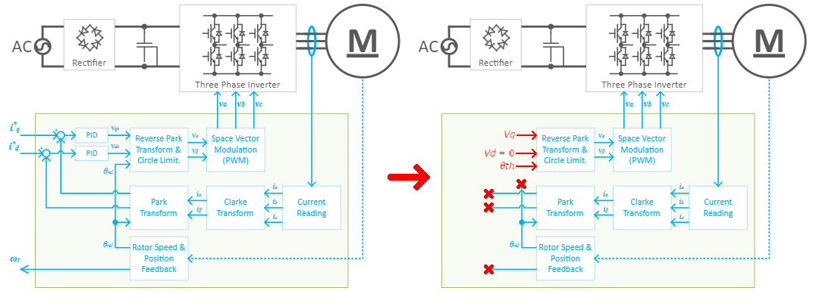
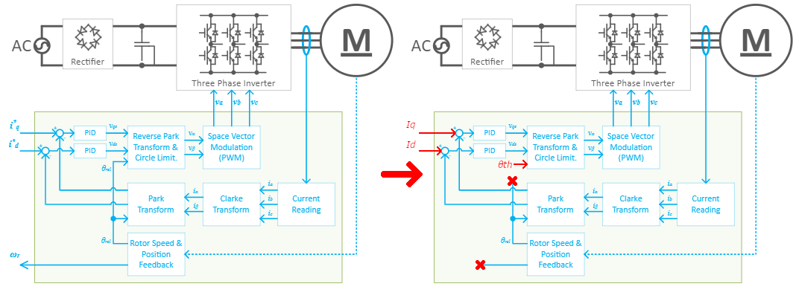
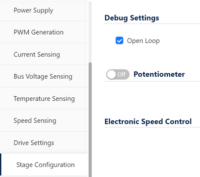
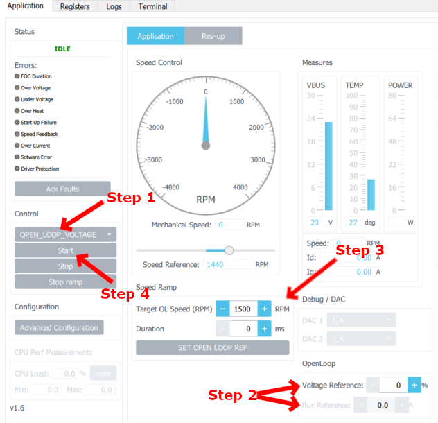
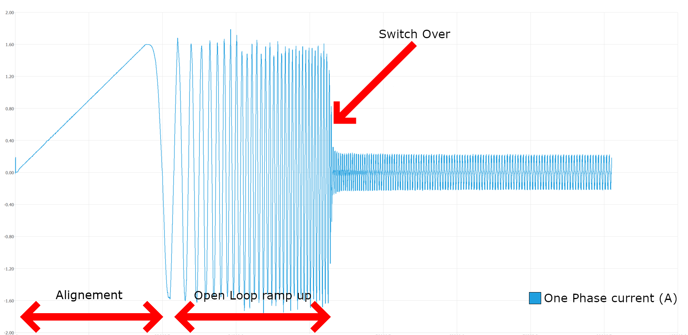
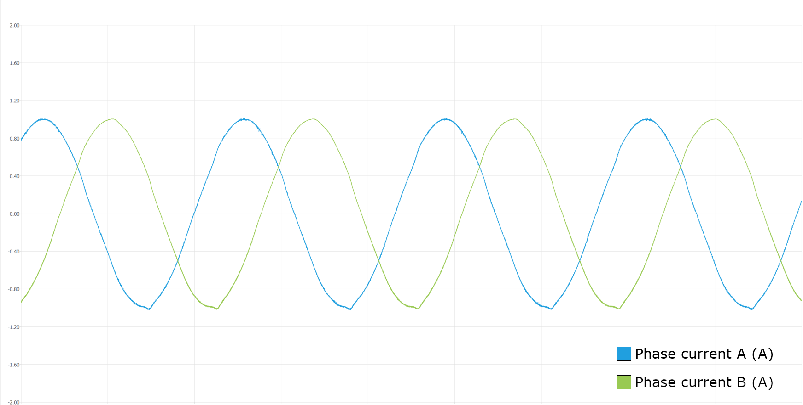
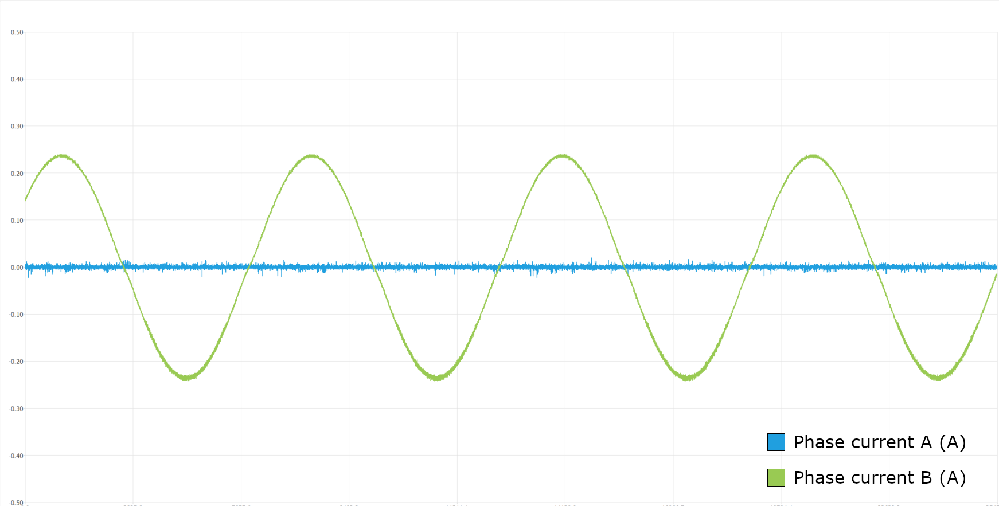

|
STM32 Motor Control SDK MCFW-6.4.1
Software Development Kit to build applications driving PMSM Motors with STM32
|
|
STM32 Motor Control SDK MCFW-6.4.1
Software Development Kit to build applications driving PMSM Motors with STM32
|
Prev: Motor Control Protocol Suite ↤| Table of Contents |↦ Next: Firmware errors
Running a motor on Open Loop (OL) mode is usually done for debugging. It is useful to break down each step from command to motor to determine at which step the unexpected behavior is located. There are two kinds of OL modes : Current and Voltage.

When debugging via Open Loop Voltage Mode, as one can see in Figure 1, the reference is now directly given by the user through Voltage Reference Vq and Speed Reference. The position θth is calculated thanks to theoretical ramp up and speed. Vd is automatically set at zero as it is generally useless for the Open Loop mode (no torque needed). Vq is given by the user as a percentage of the max output voltage magnitude. See Circle Limitation for more details. One must keep in mind that as current is no longer computed by the closed loop, and that a high Voltage across the motor induces a strong current, the system may end up in Overcurrent. The user shall use the Open Loop Voltage Mode at low Vq percentage to avoid this condition.
Lastly, despite not being computed for PID calculation, both iα and iβ are still available for the MotorPilot to display.

The Open Loop Current Mode is used to test the capacity of the system to keep a fixed current reference given by the user. Both Speed Reference and Iq are set by the user. The position θth is calculated thanks to theoretical ramp up and speed. A constant rotative field is then created through Iq and Id, whose speed is determined by Speed Reference.
MCSDK and MotorPilot provide two open loop modes : voltage and current. Those two modes can both be enabled at the same time via WorkBench by checking the “Open Loop” box in the “Stage Configuration” tab when creating a project. Looking into the generated IOC file, this comes back to setting M1_DBG_OPEN_LOOP_ENABLE to true. Selection between Voltage and Current mode is decided by the user later on via Firmware or MotorPilot.

Step 1 : Choose Open Loop mode with the scrolling menu on the left of the Motor Pilot UI.
Step 2 (Open Loop Voltage Mode only) : Set the Voltage reference. Starts low at low speed and needs to be increased when motor speed increases. If unchanged, the default value OPEN_LOOP_VOLTAGE_d in drive_parameters.h is used. Value in percentage, as described before.
Step 2 bis (Open Loop Current Mode only) : Set the Flux reference. Starts low at low speed and needs to be increased when motor speed increases. If unchanged, the default value DEFAULT_FLUX_COMPONENT in parameters_conversion.h is used. Value in Ampere ; equal to Id.
Step 3 : Set the speed ramp. /!\ Mind that acceleration must remain low, otherwise the motor will stall. (speed/duration ratio inferior to 0.1 generally does the trick, although speed must remain coherent with Voltage / Flux reference). Click Exec Speed Ramp to store the setup.
Step 4 : Start motor.
Step 5 : Repeat Steps 2 and 3 while modifying Speed and Flux / Voltage reference depending on your needs.

Step 1 : Choose Open Loop mode using MCI_SetOpenLoopVoltageMode(&Mci[motorID]) or MCI_SetOpenLoopCurrentMode(&Mci[motorID]) functions (MCI_SetOpenLoopCurrent and MCI_SetOpenLoopVoltage should be considered as deprecated there will be removed in the future).
Step 2 (Open Loop Voltage Mode only) : Set Voltage reference via OL_UpdateVoltage(&OpenLoop_ParamsMx,((Voltage_Reference * 32767) / 100)) function.
Step 2 bis (Open Loop Current Mode only) : Set Current reference via MCI_SetCurrentReferences(&Mci[motorID], Iqd) function. Mind that Iqd is a qd_t struct that needs to be given Id and Iq as parameters. Id is Flux Reference, whereas Iq is usually 0.
Step 3 : Set speed ramp via MCI_ExecSpeedRamp(&Mci[motorID],(int16_t)((Speed_rpm * SPEED_UNIT) / U_RPM), Duration_ms) function.
Step 4 : Start motor via MC_StartMotor**x**().
Bold pieces of text in functions are to be set by user according to his needs and system.

This picture shows the typical current curves one can expect from a Sensorless Start-up. The alignment phase sets the rotor to its initial position, the motor then starts rotating during the Open Loop ramp-up phase, and once BEMF gets estimated correctly, the system switches to close loop and current control is enabled. If there is an issue on how the currents look like, it may be a good idea to make some tests on Open Loop Mode to get insights on the Hardware's behaviour.
The Open Loop feature aims at reducing the functional scope of the Firmware to focus instead on the Hardware's behaviour. One can then pinpoint more easily the root cause of the issue. The first step is to narrow down the functional scope as much as possible. That way, if the system is not working, then the location of the issue is quite straightforward. On the contrary, if the system is working, then one can confidently enlarge the scope while knowing which part of the system can be trusted.
When using the Open Loop feature, one can expect the following curves :

Remark : The general aspect of the curve is independant of the chosen Open Loop mode. However, depending on the running motor, the Open Loop Voltage Mode may be showing less sinusoidal curves. That reveals the sixth harmonic's effects. Thanks to current control, the Open Loop Current Mode (and Closed Loop) can attenuate this behaviour.
The most restrictive mode is the Open Loop Voltage, so it will naturally be the first one to check.

This figure shows an example of a defective system on Open Loop Voltage Mode ; Phase A is missing. From this point, the issue lies in the following :
Remark : if one uses MotorPilot to plot the currents, then there also could be a current sensing issue. Though current values are not used by the Firmware in Open Loop Voltage Mode, they are still accessible via MotorPilot. However, this issue can be ruled out if one uses external current probes on an oscilloscope for example. It is important to note that this issue alone will not tamper with the motor rotation, as those currents are not used by FW and only displayed : one can safely assume that the issue lies in current sensing if the motor is turning but one phase is still not displayed by the MotorPilot, or if there is a major difference between the MotorPilot and the oscilloscope.
Once Open Loop Voltage Mode proves successful, one can safely consider that :
However, you may still experience issues on Open Loop Current Mode, which would mean that current sensing is at cause. Here is a non-exhaustive list of the possible issues :
The Open Loop Current Mode is the one used by MCSDK for ramp up before switching to Closed Loop. This means that a functional Open Loop Setup leads to a successful ramp up. One can even manually set their ramp up via Open Loop before switching to a regular project.
Prev: Motor Control Protocol Suite ↤| Table of Contents |↦ Next: Firmware errors